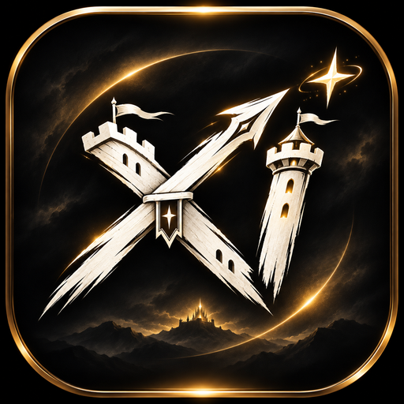

BỘ NHỚ GAME
—Tổng dung lượng nội dung đã xác minh, gồm bản dự phòng; không phải dung lượng chiếm trên ổ đĩa.
Đang kiểm tra dung lượng trình duyệt…
UNIVERSEĐã tải bản cập nhật Xi. Đóng tất cả cửa sổ Xi rồi mở lại để áp dụng; không xóa dữ liệu website.
Không tìm thấy trò chơi phù hợp.
Trò chơi của bạn, sẵn sàng để mở lại.
Tổng dung lượng nội dung đã xác minh, gồm bản dự phòng; không phải dung lượng chiếm trên ổ đĩa.
Đang kiểm tra dung lượng trình duyệt…Không có game trong nhóm này.
Theo dõi trò chơi và các cập nhật trên thiết bị.
Chọn phong cách cho sảnh Xi. Không thay đổi giao diện bên trong game.
JPEG, PNG hoặc WebP · tối đa 12 MB. Ảnh chỉ lưu trên thiết bị này.
Đổi mức hiệu ứng, không đổi ảnh nền hay dữ liệu game.
Lưu màu, bố cục và hiệu ứng vào hai vị trí. Ảnh nền giữ nguyên trên thiết bị.
iPhone: Safari → Chia sẻ → Thêm vào màn hình chính. Android: Chrome → Cài đặt ứng dụng.
Đã cài Thiên Thủ trước đây? Tiếp tục dùng biểu tượng hiện tại. iOS có thể giữ tên đã đặt lúc cài; tên mới áp dụng cho lần thêm ứng dụng mới.
Thử toàn bộ nội dung trong bản lưu riêng. Chế độ chơi thường không bị thay đổi.
Bỏ chọn không thu hồi nội dung đã mở. Đặt lại Sandbox để áp dụng từ đầu. Kỷ lục thử thách vẫn phải chơi để đạt.
Tiến trình từng trò chơi lưu riêng. Sao lưu thủ thành trong cài đặt của trò chơi. Gỡ tài nguyên không xóa bản lưu, nhưng xóa dữ liệu website có thể làm mất cả hai.
Bộ nhớ PWA có thể bị xóa bởi thiết bị. Hãy giữ bản lưu và bộ game bên ngoài trình duyệt.